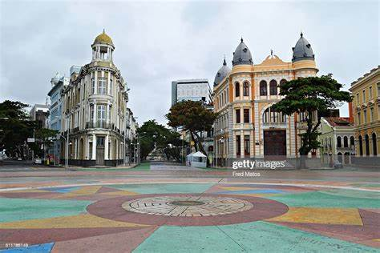
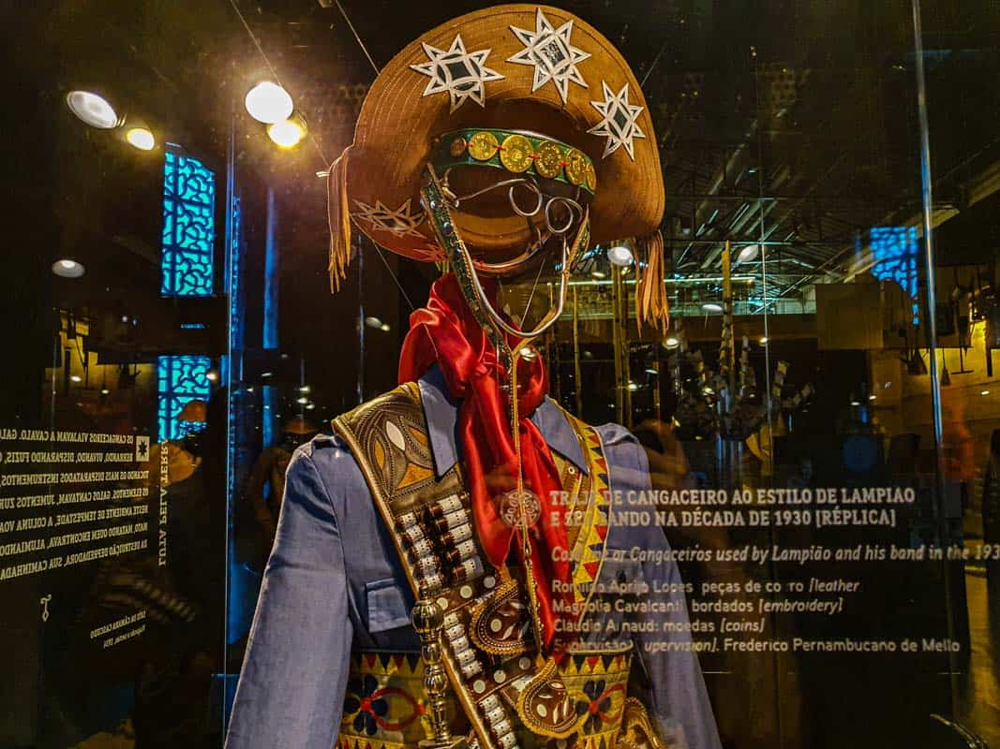

Marco Zero cidade Turistica
historia do marco zero
Desde os primeiros dias da colonização portuguesa no Brasil, o Recife desempenhou um papel crucial no contexto histórico, político e econômico do país. No século XVI, tornou-se um importante entreposto comercial devido à sua privilegiada localização geográfica, abrigando portos movimentados e servindo como base para expedições rumo ao Novo Mundo. Foi nessa época que o Marco Zero Recife, PE, foi estabelecido, marcando o ponto onde a cidade começou a ser construída e a história do Recife começou a ser escrita. No decorrer dos anos, a cidade enfrentou desafios como batalhas, invasões estrangeiras, revoltas populares e um intenso desenvolvimento urbano. O Marco Zero permaneceu firme no centro dessas mudanças. Sua ampla praça e o imponente obelisco atraem visitantes e locais para diferentes eventos culturais, festivais e manifestações políticas. Para os viajantes que visitam o monumento, é possível explorar a rica arquitetura ao redor, visitar igrejas históricas, conhecer o Paço do Frevo, e desfrutar da vista para o Rio Capibaribe. Além disso, é possível degustar a culinária regional em restaurantes próximos e explorar o comércio local nas feiras de artesanato da região. Em outras palavras, visitar esse local emblemático é uma oportunidade de mergulhar na riqueza histórica e cultural do Recife.
Exposições do Museu Cais do Sertão
O Museu Cais do Sertão é um espaço cultural que homenageia e conta a história do povo sertanejo, desde a história do cangaço até a vida de Luiz Gonzaga. O museu conta com exposições fixas e temporárias, cursos e palestras sobre a cultura local. Vale a pena aproveitar essa experiência imersiva pela história do sertão nordestino.
escultura de brennand

O Parque das Esculturas Francisco Brennand é um museu de arte a céu aberto localizado na cidade do Recife, capital do estado brasileiro de Pernambuco. Constitui um dos principais feitos do artista plástico pernambucano Francisco Brennand. Idealizado na década de 1990 como parte do projeto “Eu vi o mundo… Ele Começava no Recife” para comemoração dos 500 anos do descobrimento do Brasil, o parque foi inaugurado em 29 de dezembro 2000. Ao total, existem 90 esculturas criadas por Francisco Brennand, sendo a principal obra no complexo a Torre de Cristal, com 32 metros de altura e confeccionada em argila e bronze. Apesar de ser um dos principais pontos turísticos de Recife, em pesquisa ao Jornal do Comércio feito em 2018, compreendeu que mais da metade da população não conhece o parque. No ano de 2014, todas as obras foram restauradas, assim como o parque, além do recebimento de reforço na segurança do complexo